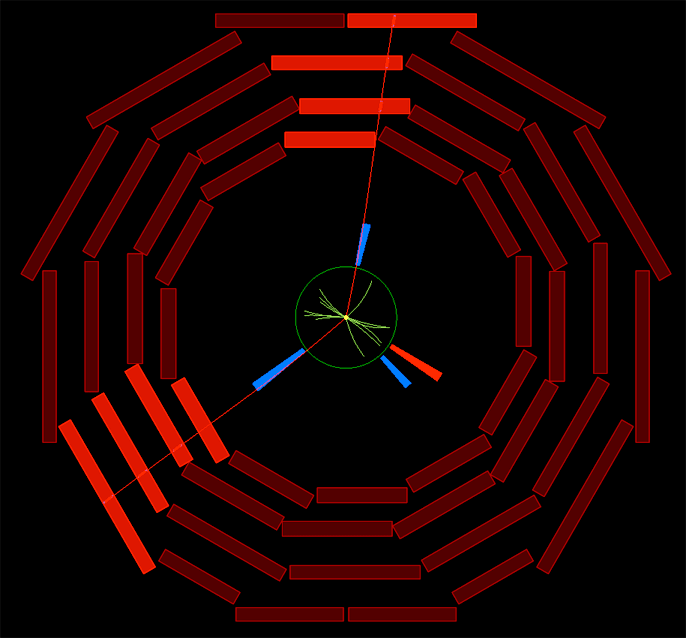

|
Let's begin with a little logic. No single effect suggests the presence of any particular cause, unless you have some reason to suppose that there is a unique cause for this kind of effect. If either A or B can produce C, then from C's existence, neither A nor B follows, but only (A or B). So, for example, from the fact that your car won't start, it does not follow that your battery is dead. It could also be a loose electrical connection, or perhaps other things. From the effect (that the car won't start), no single cause can be inferred, because multiple causes are possible. When considering the dimuon spectrum produced at CMS, the kind of effects we are considering are signals in a detector, which is not even yet the detection of pairs of muons. Two muons are a postulated cause for a given detector behavior. In principle, and at the logical beginning of an investigation, there may be (and there are in fact) multiple causes for the detector effects that we ascribe typically to two muons. The only way we know any particle physics at all is by amassing multiple detector signals, noticing patterns in them, and finding explanations for those patterns. The explanations explain the patterns, not each specific event. The causes of each individual event can only be assigned a probability: such and such is the most probable cause of this effect, but these other causes may have caused it. We use the term "event" to describe the assignment of a particular cause to a particular effect, and thus we refer to event candidates as the basic unit here, since the assignment of cause to effect is always just more or less probable. So consider this image of a dimuon candidate: It seems as if two muons caused the detector behavior represented here, though it is possible that some other particles, or muons from more than one decay event, produced this detector behavior. (It's just improbable.) If the invariant mass of the two muons (calculated from the momentum, in turn calculated from the curvature of the tracks in the magnetic field, on the assumption that they were in fact muons) is near to 91 GeV, there is some significant probability that these muons are the offspring of a decaying Z boson. Yet there remains some probability that they came from some other process (again, if they are in fact muons.) The shape of the dimuon mass spectrum, coupled with the theory explaining the origin of each peak in that spectrum, will tell us how probable each cause of such an event candidate is, but there is no way to move beyond that probability to certainty about each event candidate. |
|
Displaying Multiple events - Close Window |